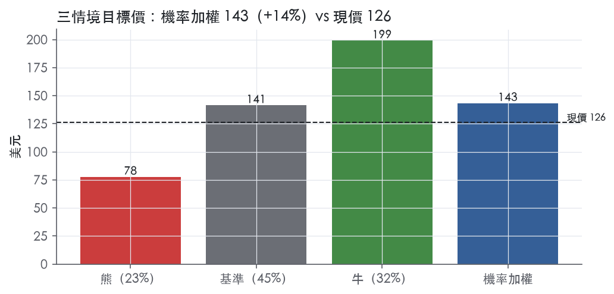
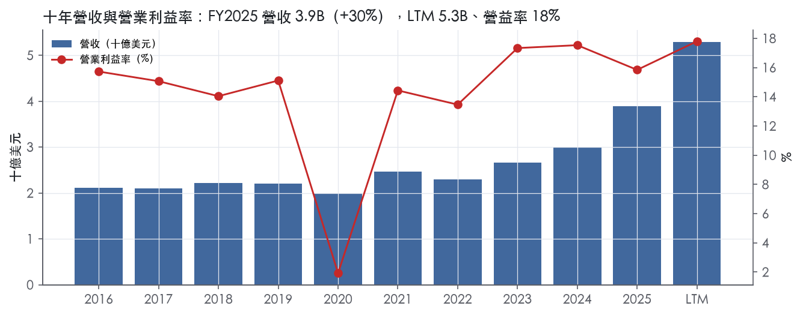
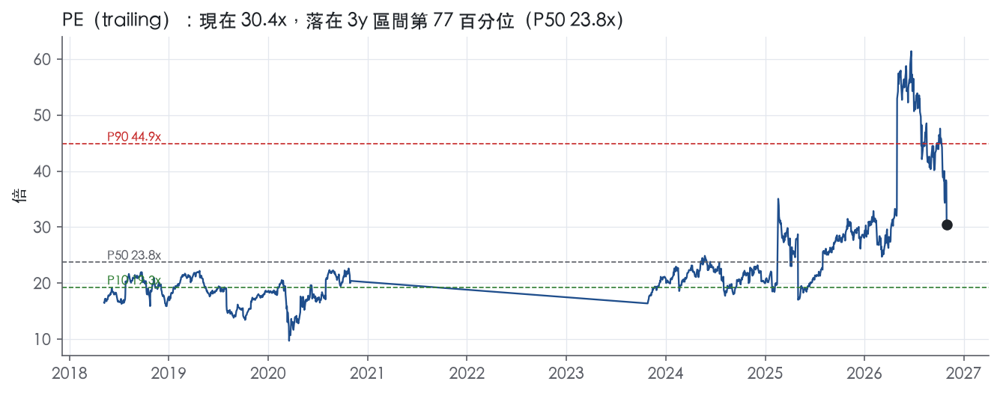
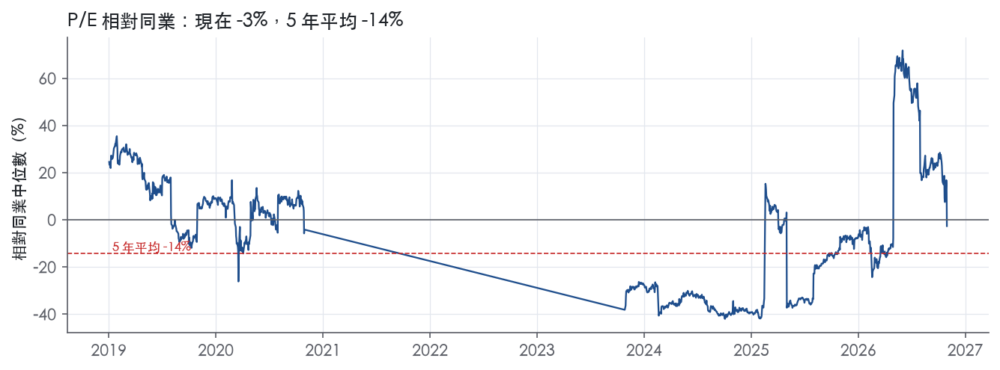
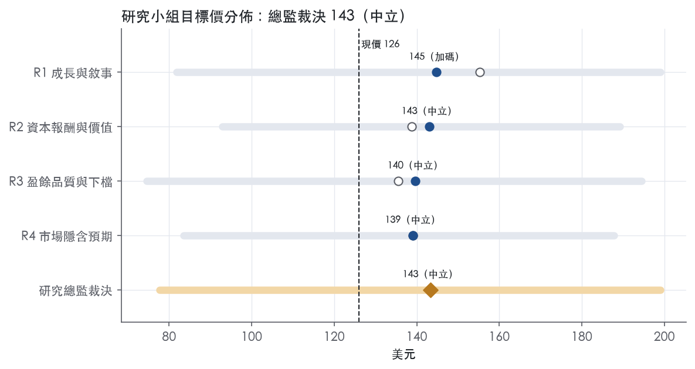
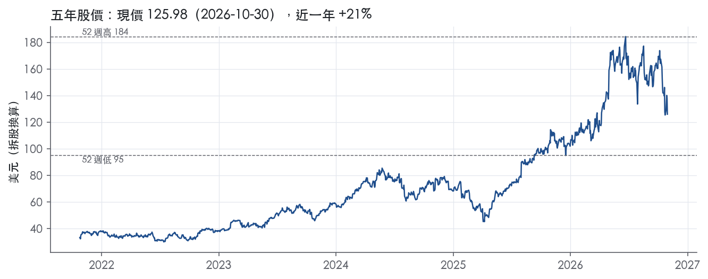

評等總表 › 工業 › NVT
訂單撐盈餘複利，倍數持平，溫和看多｜評等 中立｜目標價 143
| 報告日 | 評等 | 目標價 | 當時股價 | 超額報酬 |
|---|---|---|---|---|
| 2026-10-30 | 中立 | 143 | 126 | +4.4% |
| 評等 | 中立（邊界，鄰近加碼） |
| 12 個月目標價 | 143 美元 |
| 現價 | 125.98 美元（2026-10-30） |
| 預期報酬 | 股價 +13.7%＋股息 0.7%＝總報酬 +14.4%；同業籃門檻 10.0%，超額 +4.4% |
| 估值方法 | P/E 21.0x，套在第 5–8 季的EPS（也就是一年後的未來四季） |
| 三情境 | 熊 78／基準 141／牛 199 |
| 研究流程 | 四位研究員兩輪辯論＋研究總監裁決 |
| 資料來源 | SEC EDGAR XBRL、Tiingo、FRED（全免費） |
訂單撐盈餘複利，倍數持平，溫和看多（研究總監裁決，四位研究員兩輪辯論後）
評等 中立（邊界，鄰近加碼）｜12 個月目標價 143 美元（總監三情境機率加權 145 與研究員中位數 141 各半）｜現價 125.98（2026-10-30）
預期報酬：股價 +13.7%＋股息 0.7%＝總報酬 +14.4%。同業籃門檻 10.0%，超額 +4.4%，離加碼的分界不到三個百分點，屬邊界評等（落在其他級距的機率約五成）。
估值方法：P/E 21.0x，套在第 5–8 季的EPS（也就是一年後的未來四季）。三情境：熊 78（23%）／基準 141（45%）／牛 199（32%）。
立場看多而評等中立：評等看的是「預期總報酬 14.4% − 同業籃門檻 10.0%」＝超額 4.4%，不是絕對漲跌；看多但超額不足，代表上檔已被同業的預期報酬抵銷。
評等說明：研究總監自己的機率加權目標價 145 美元對應「加碼」；與研究員第二輪中位數 141 美元各半後為 143 美元，落入「中立」。兩者只差一級，請把這檔讀成「加碼～中立」，正文裡總監的立場文字以「加碼」寫成。
什麼會讓研究總監改變看法：FY2027有機成長指引中值低於12%或2027Q1有機成長跌破15%，y2改採R2/R3的11%並轉中性；FY2026 ROIC超過11.2%且Maverick併入後連兩季站上10%，則倍數可上P75、轉強力看多。
| 過去四季（實際，FY2026Q3） | 未來四季 | 第 5–8 季 | 第 9–12 季 | |
|---|---|---|---|---|
| 營收（B） | 5.3B | 6.9B | 7.9B | 8.5B |
| 營收成長 | 48.0% | 31.0% | 14.0% | 8.0% |
| 營業利益率 | 17.8% | 18.0% | 18.0% | 17.8% |
| EPS（美元） | 4.14 | 5.92 | 6.74 | 7.18 |
| EPS 成長 | 14.0% | 43.0% | 13.7% | 6.5% |
| 每股股息（美元） | 0.83 | 0.83 | 0.83 | 0.83 |
| P/E（現價） | 30.4x | 21.3x | 18.7x | 17.6x |
| 股息殖利率（現價） | 0.7% | 0.7% | 0.7% | 0.7% |
過去四季為申報數字；預測為研究總監的假設、程式計算。倍數與殖利率都用現價計算，用來看現價對應各期獲利的高低。
| 情境 | 機率（歷史） | 故事 | 未來四季營收成長 | 第 5–8 季營益率 | 倍數 | 目標價 | 股價漲跌 |
|---|---|---|---|---|---|---|---|
| 熊 | 23%（21%） | 風險表第1條：2027年初超大規模業者下修資本支出、訂單出貨比<1，Q2起有機轉負；疊加第3條關稅壓毛利、第5條Maverick舉債利息，SG&A去槓桿至15.5%，倍數退至前瞻帶P25附近 | 25.0% | 15.5% | 16.0x | 78 | -38.3% |
| 基準 | 45%（47%） | Q4指引與Maverick撐住NTM 31%，2027下半年起有機降至約14%，營益率持平18%，市場維持21x前瞻倍數 | 31.0% | 18.0% | 21.0x | 141 | 12.3% |
| 牛 | 32%（32%） | Q3「指引32–35%做到44%」的超預期模式再演一年，2027有機成長兩成以上、液冷與電力配送拿份額，倍數略高於P75對齊HUBB | 37.0% | 19.8% | 24.0x | 199 | 58.0% |
目標價由程式依研究總監的驅動與倍數計算；機率由研究總監給定。括號內是歷史頻率：把這檔股票過去十年 12 個月報酬的波動形狀，置中在基準情境，結果落在各情境附近的比例。

四位研究員用不同方法各自估值，回應研究總監的質疑後交出第二輪，最後由總監逐點裁決。各研究員的主張見第七章，裁決理由見第八章，完整論證見《研究底稿》。
| 立場（一輪→二輪） | 加權目標價（一輪→二輪） | 評等（一輪→二輪） | 第二輪倍數 | 熊～牛目標價 | |
|---|---|---|---|---|---|
| R1 成長與敘事 | 看多→看多 | 155→145 | 加碼→加碼 | 21.0x | 82～199 |
| R2 資本報酬與價值 | 中性→中性 | 139→143 | 中立→中立 | 25.0x | 93～189 |
| R3 盈餘品質與下檔 | 中性→中性 | 135→140 | 中立→中立 | 21.0x | 75～194 |
| R4 市場隱含預期 | 中性→中性 | 139→139 | 中立→中立 | 20.0x | 83～188 |
| 研究總監裁決 | 看多 | 143 | 中立 | 21.0x | 78～199 |
目標價由程式依各自的驅動與倍數計算；評等＝機率加權總報酬 − 同業籃門檻。
nVent 是一家全球電氣連接與保護解決方案供應商，將自己定位為「讓系統更安全、讓世界更安心」的電氣基礎設施公司¹。公司設計、製造、行銷、安裝並服務於連接並保護關鍵設備、建築與重要流程的高性能產品與解決方案，產品線涵蓋匯流排系統、電纜管理、控制建築、液冷與氣冷散熱、電氣連接、外殼、設備保護、電力連接與電力管理，以及開關設備系統¹。終端應用覆蓋基礎設施、工業、商業與住宅、以及能源市場¹。nVent 本質上是一家靠電氣化、數位化與資料中心需求驅動的「連接＋保護」雙軌公司，資料中心與基礎設施是目前最大的成長敘事。公司原為 Pentair 旗下電氣業務，2018 年分割獨立上市，股票代號 NVT¹。
nVent 目前分為兩個報告分部：Systems Protection 與 Electrical Connections，2025 年由原「Enclosures」與「Electrical & Fastening Solutions」更名而來¹。Systems Protection 提供保護電子設備、系統與資料的方案，主要服務資料中心等關鍵應用，公司稱自己是美國及全球的外殼與液冷領導者，主要客戶是超大規模資料中心業者、公用事業、原始設備製造商、面板製造商與承包商，品牌包括 nVent HOFFMAN、SCHROFF、TRACHTE¹。Electrical Connections 提供連接電力與資料基礎設施的方案,強調應用專業與省工設計，主要客戶是承包商、電氣公用事業、電工與面板製造商，品牌包括 nVent CADDY、ERICO、ILSCO¹。從最新一季看，Systems Protection 營收 1,098M、年增 53%，調整後營業利潤率 23.0%；Electrical Connections 營收 417M、年增 23%，調整後營業利潤率 28.2%，較去年同期下滑180個基點²。Systems Protection 目前明顯是成長引擎，Electrical Connections 規模較小但利潤率結構性更高，只是近期受組合與投入成本影響小幅收斂。10-K 未揭露兩分部占總營收的年度百分比拆分。
公司近年靠併購重塑分部邊界：2023 年以約 1.1B 美元收購 ECM Industries 併入 Electrical Connections¹；2024 年以約 0.7B 美元收購 Trachte 併入 Systems Protection¹；2025 年再以約 1.0B 美元收購 Avail Infrastructure Solutions 的外殼、開關設備與匯流排業務（Electrical Products Group），同樣併入 Systems Protection，聚焦電力公用事業與資料中心垂直¹。同時 2025 年以 1.6B 美元淨現金出售 Thermal Management 業務給 Brookfield 旗下關係企業，該業務原為獨立報告分部，現於財報中列為停業部門¹。2026 年 10 月 1 日又完成收購 Maverick Power，擴大資料中心電力配送平台曝險²。這一系列動作等於把 nVent 從「電氣零組件雜貨店」重新組裝成一台資料中心／電力基礎設施成長機器，Thermal Management 出售騰出的資本直接拿去買更貴、更契合資料中心敘事的資產。
公司銷售通路以電氣經銷商、零售、承包商與原始設備製造商為主，公司明言成功與否高度依賴通路與經銷網路的建置與夥伴關係¹。公司採「全球銷售、在地服務」模式，透過區域製造與供應鏈就近服務客戶¹。地理與產品線上的市場皆屬高度競爭，對手包含大型全球企業，也包含以價格、在地專業與關係競爭的中小型區域廠商¹。10-K 未揭露具體地區營收占比；員工資料顯示約48%位於美國，隱含美國仍是最大單一市場，但海外曝險亦不小。Electrical Connections 產品在北半球春夏需求季節性上升¹。訂單積壓（backlog）在 2025 年底達 2,349.9M，較 2024 年底的 749.3M 大增213.6%，主要來自 Electrical Products Group 併購與資料中心業務成長，其中 Systems Protection 積壓從 665.9M 增至 2,118.9M¹。公司預期2025年底的多數積壓將於2026年出貨¹。積壓暴增且公司明講多數來自資料中心與併購，意味短期營收能見度已經鎖定、但也代表成長的「真實有機性」需要打折看。
FY2025Q4 營收 1.07B，年增41.8%，毛利率36.5%，營益率15.4%（等同資料包 FY2025Q4 欄）。FY2026Q1 營收 1.24B、年增53.5%，毛利率35.9%，營益率15.8%（資料包 FY2026Q1）。FY2026Q2（即 2026年6月止三個月）公司報告營收1,471.3M，較去年同期963.1M成長53%，有機成長47%；報告EPS 1.32美元，年增103%，調整後EPS 1.45美元，年增69%；營業利益300.7M，年增92%；自由現金流167M，年增125%³。管理層表示新產品貢獻超過30個百分點的銷售成長，並宣布再一次液冷產能擴產以滿足資料中心需求，同步大幅上調全年指引至報告營收成長37%至39%、有機成長32%至34%、GAAP EPS 4.29至4.39美元、調整後EPS 5.00至5.10美元³。FY2026Q3（2026年9月止三個月）營收1,514.9M，年增44%，有機成長同為44%；報告EPS 1.23美元，年增68%，調整後EPS 1.52美元，年增67%；營業利益282.3M，年增70%，營業利益率18.6%；現金流303M，年增12%，自由現金流268M，年增6%²。CEO Beth Wozniak表示本季所有垂直市場皆雙位數成長，由基礎設施領軍，新產品貢獻約30個百分點的銷售成長，並已於10月1日完成 Maverick Power 收購以拓展資料中心電力配送平台²。公司同步再次上調全年指引至報告銷售成長48%至49%、有機成長38%至39%、GAAP EPS 4.54至4.57美元、調整後EPS 5.36至5.39美元，並估計第四季報告銷售成長45%至48%、有機成長26%至29%、GAAP EPS 1.13至1.16美元、調整後EPS 1.30至1.33美元²。連續兩季上調全年指引、且毛利率在高營收成長下仍小幅下滑（Q3毛利率35.8% vs 去年同期37.4%），顯示成長主要來自併購與資料中心放量而非單純提價，獲利槓桿更多體現在營業費用稀釋而非毛利率擴張。
公司將電氣化、永續性與數位化（包含人工智慧應用增加）列為驅動 Systems Protection 產品需求的趨勢¹。公司以「One nVent」為核心策略，統一聚焦商業卓越、數位轉型、規模化整合技術與全球布局能力¹。公司用 Spark 管理系統作為營運框架，五大要素為 People、Growth、Lean、Digital、Velocity，用以推動高績效文化¹。在最新財報中，CEO 強調新產品貢獻約30個百分點的銷售成長，是近兩季反覆提及的核心成長語言²；公司也將液冷產能擴張與 Maverick Power 等併購列為滿足資料中心需求、拓展電力配送平台曝險的具體行動³²。整體看，nVent 的敘事已經從傳統電氣零組件廠轉型為「資料中心電力與散熱基礎設施」概念股，透過密集併購與出售非核心資產（Thermal Management）主動調整組合。風險在於積壓訂單與營收成長高度集中於資料中心／基礎設施垂直與併購貢獻，一旦資料中心資本支出週期降溫，目前的高基期成長率與指引上修節奏可能難以延續。現股價對應 LTM EV/EBITDA 18.3x、EV/EBITA 19.4x，低於過去5年中位數，顯示市場尚未完全把這輪加速成長定價進倍數。

nVent 的護城河評級為「無」：ROIC 長期低於資本成本，我們沒有把握未來 5 年 ROIC 能穩定高於資本成本。毛利率穩定，說明產品層級有一定定價力。但連續併購墊高了投入資本，這份定價力沒有轉成超額報酬。近兩年 ROIC 回升，可是幅度與持續期都不足以上調評級，趨勢判為穩定。
五類來源中，只有無形資產與轉換成本找得到證據，而且兩者強度都有限。網路效應、成本優勢、效率規模三類沒有原文證據，不列入。
無形資產（品牌）：公司旗下品牌包括 nVent CADDY、ERICO、HOFFMAN、ILSCO、SCHROFF、TRACHTE，部分品牌歷史超過 100 年¹。公司把「品質與可靠度的聲譽」列為競爭成功因素之一¹。不過公司也明說，業務並不重大依賴任何單一專利、技術、客戶關係、商標或品牌¹。公司還表示，專利與授權到期不預期造成重大不利影響¹。品牌在工程規格與經銷貨架上有辨識度，但不足以單獨構成護城河。
轉換成本：公司把「過往安裝紀錄」與「合約條款」列為成功因素¹。外殼、開關設備與控制建築多半被寫進客戶的設計規格，換供應商要重新驗證，這構成溫和的轉換成本。另一方面，部分基礎設施訂單的設計與製造週期可能超過一年¹。長週期專案能提高客戶黏著度，但也意味每個新案都要重新競標。
量化底稿不支持護城河主張，這是我們評「無」的主因。
數字與定性證據的衝突在於：毛利率顯示產品有定價力，ROIC 卻長期不及資本成本。我們的解讀是，公司以約 1.1B 美元收購 ECM Industries¹、以約 0.7B 美元收購 Trachte¹、以約 1.0B 美元收購 Electrical Products Group¹，持續用高價買成長，投入資本累積的速度追上了利潤成長。這屬於資本配置問題，不是單純會計扭曲，因為股東實際付出了這些現金。另一個限制是，資本成本代理值 10.0% 是以 10 年債加 5% 推得，利率環境偏高時會壓低超額報酬，但即使調低門檻，十年平均 7.6% 仍難稱寬護城河。
最大威脅是價格競爭與併購紀律，兩者都直接打在 ROIC 上。
上調評級的觸發條件是：ROIC 連續數年站上資本成本，且期間沒有新的大型併購。
目標倍數相對同業應持平，不給溢價。理由是 ROIC 十年平均低於資本成本，目前的高成長未必創造超額價值，資料中心帶動的超額成長倍數只應反映在積壓訂單可見的 1 至 2 年內，不宜外推成長期溢價。現行 EV/EBITDA 低於 5 年中位數 21.5x，我們不認為這代表低估；在 ROIC 證明能站上資本成本之前，不應把倍數往中位數以上拉。
| 指標 | 最新 | 十年平均 | 標準差 | 最低 | 最高 |
|---|---|---|---|---|---|
| ROIC | 9.3% | 7.6% | 2.8% | 1.1% | 11.2% |
| 毛利率 | 37.7% | 38.8% | 1.4% | 35.9% | 40.3% |
| 營業利益率 | 15.8% | 14.0% | 4.2% | 1.9% | 17.5% |
| FCF 利潤率 | 9.6% | 14.9% | 2.6% | 9.6% | 18.9% |
| ROE | 20.4% | 11.1% | 6.4% | -1.9% | 20.4% |
程式計算。資本成本代理值（10 年債＋5%）：10.0%；ROIC 平均減資本成本：-2.4%；ROIC 有資料的 8 年中，高於資本成本 1 年。
現金轉換在近三年是乾淨的：LTM營業現金流／淨利 1.14x、近三年平均 1.17x，皆高於1.00x的綠燈門檻。自由現金流／淨利 LTM 0.95x、近三年 1.02x，同樣在綠燈區。應計比率LTM為-1.2%、近三年-0.2%，代表淨利不是靠應計堆出來的，現金甚至略優於帳列淨利。唯一值得注意的是十年平均現金轉換僅0.41x、FCF/淨利僅0.35x，這主要是FY2025認列了出售Thermal Management事業的一次性處分利得710.2M中含非現金性質的281.7M列報於停業部門損益²，把十年平均拉低的是分母（淨利）被一次性利得墊高，不是現金流出了問題。LTM層級（LTM@FY2026Q3）營收5.29B、GAAP稀釋EPS 4.14、FCF 0.64B，三個數字的方向一致，沒有「淨利漂亮、現金乾」的典型假帳跡象。FY2025年度現金流量表顯示營業活動現金流（繼續營業）649.0M，主要反映繼續營業淨利634.5M加回非現金折舊攤銷與遞延稅，淨營運資金僅增加23.0M⁴，顯示營運資金沒有在吃掉盈餘，存貨成長與營收成長的落差FY2025僅+1.5pp，落在綠燈區。
Q3 2026新聞稿中，GAAP營業利益282M與調整後營業利益335M有53M的差距（8-K 2026-10-30表格）²；GAAP稀釋EPS 1.23與調整後EPS 1.52的差距同樣顯著²。全年guidance更明顯：GAAP EPS區間4.54–4.57、調整後EPS區間5.36–5.39²，每股落差約0.8美元，主要缺口來自無形資產攤銷——10-K揭露FY2025無形資產攤銷費用147.1M，較FY2024的94.7M大增，主因是Electrical Products Group與Trachte兩筆收購⁴。我判斷這塊攤銷是真實經濟成本，不該無條件加回，因為nVent持續用併購驅動成長（FY2025併購貢獻營收489.9M⁴），攤銷反映的是真金白銀付出去的收購代價在逐年攤提。另一個大缺口是FY2024的所得稅：有效稅率43.9%主要因認列92.8M非現金費用，用於對盧森堡稅損遞延所得稅資產提列估值備抵⁴——這是真實的非現金稅務調整，一次性成分高，調整後數字合理。FY2025的「淨利暴增」則是另一回事：淨利710.2M中有281.7M來自停業部門（出售Thermal Management事業的稅後利得，其中處分利得435.3M扣除交易成本，再扣除處分相關稅負152.7M）⁴，這部分完全與核心電氣連接保護業務無關，估值應予剔除。
槓桿偏低、覆蓋能力足夠，但近幾年靠舉債做併購是常態。LTM淨負債／EBITDA僅0.91x，遠低於3.00x紅線，但這是FY2025出售Thermal Management取得1.6B淨現金後的結果（10-K FY2025 Item 7）；近三年平均2.46x與十年平均2.28x更能反映常態槓桿水位，仍在2.00–3.00x的溫和區間。公司債務契約要求淨槓桿不超過3.75x（併購期間可放寬至4.25x）、EBITDA/利息不低於3.00x，10-K載明FY2025底完全合規且無重大疑慮⁴。資本配置上，FY2025股份回購253.1M、股利支付130.4M，同時償還長期債務873.3M⁴——先還債、後回饋，順序健康。稀釋股數年變動LTM為-0.1%、近三年-0.7%，顯示回購確實淨減少股數而非只是抵銷SBC發股。10月1日完成Maverick Power收購，持續擴大資料中心電力配電版圖²，顯示併購步調仍快，未來槓桿與商譽/攤銷規模會再墊高。
淨利率FY2019→FY2020跳動-12pp（量化底稿顯示FY2019淨利0.22B/營收2.20B約10%，FY2020轉為淨損-0.05B/營收2.00B）：本次提供的10-K段落僅涵蓋FY2025與FY2024的比較討論，未附FY2019/2020逐項說明，無法直接引用原文解釋成因。但從年度表可見FY2020該年遭遇疫情期間需求急凍，營收衰退-9.3%、營業利益率從15.1%驟降至1.9%，方向與時間點完全吻合2020年全球工業資本支出停滯的宏觀事實，我判斷這是疫情引發的一次性需求衝擊與可能的減損，而非持續性盈餘品質問題，但因缺乏原文佐證，標記為中等置信度的推論，非「已驗證解釋」。
淨利率FY2020→FY2021跳動+13pp：這是前一個紅旗的鏡像——FY2021營收成長23.2%、營業利益率回升至14.4%，屬於疫情後需求正常化的機械性回彈，不代表盈餘品質有結構性改善或惡化，是前期低基期造成的數字假警報。
淨利率FY2023→FY2024跳動-10pp：此項有原文可直接驗證，是真實但一次性的稅務項目。FY2024有效稅率從FY2023水準跳升至43.9%，主因是認列92.8M非現金費用、對盧森堡稅損遞延稅資產提列估值備抵⁴，疊加Trachte收購後攤銷費用增加（FY2024攤銷94.7M）⁴。這兩項都是可解釋、非經常性或非現金性質，不是現金盈餘真的惡化，但在估值上應把FY2024的低稅後淨利視為「稅務雜訊」而非核心獲利能力下滑。
利息保障倍數黃燈（近三年平均5.83x，低於8.00x門檻，十年平均232.9x）：十年平均被FY2016–2022幾乎零負債的歷史水準拉高，近三年平均5.83x才反映ECM Industries（2023，約1.1B現金收購）、Trachte（2024，約0.7B）與Electrical Products Group（2025，約1.0B）三筆大型收購後舉債增加的真實水位⁴。5.83x仍高於債務契約規定的3.00x下限⁴，屬於「因併購步調加快而自然下降，但尚未進入警戒區」的可解釋黃燈，非信用風險紅旗。
（股利＋回購）／淨利黃燈（近三年平均51.2%，略高於50%但非超過100%的危險區）：FY2025股利130.4M加回購253.1M合計383.5M，對應繼續營業淨利428.5M，比例偏高是因為同年完成處分利得推升分母基礎、同時公司仍積極買回庫藏股⁴；不是靠舉債發股利，資料顯示FY2025是先還債873.3M再回饋股東，現金來源明確是處分所得與營運現金流⁴，判定為可解釋黃燈。
估值應以調整後（剔除無形資產攤銷以外的）核心GAAP繼續營業淨利為基礎，但要先扣除FY2024的一次性稅務備抵費用與FY2025的停業處分利得兩項雜訊，不建議直接套用報表淨利或新聞稿調整後EPS中的全部加回項。現金轉換與應計比率都是綠燈，代表核心盈餘不需要大幅打折，但併購帶來的攤銷是真實成本，不應完全加回，隱含倍數應錢EV/EBITDA或EV/EBITA優先於P/E。槓桿目前不構成倍數上限的硬約束（近三年2.46x仍在契約3.75x門檻之下），但併購頻率加快（Maverick Power剛於10月完成）意味未來槓桿與攤銷規模可能再升，若持續舉債併購，倍數應維持在歷史中位數附近而非上緣。
| 項目 | LTM | 近三年 | 十年 | 燈號 | 規則 |
|---|---|---|---|---|---|
| 營業現金流／淨利 | 1.14x | 1.17x | 0.41x | 綠 | ≥1.00x 綠、<0.80x 紅 |
| 自由現金流／淨利 | 0.95x | 1.02x | 0.35x | 綠 | ≥0.90x 綠、<0.60x 紅 |
| 應計比率（(淨利−CFO)／平均總資產） | -1.2% | -0.2% | -1.9% | 綠 | ≤0.0% 綠、>5.0% 紅 |
| SBC／營收 | 0.7% | 0.9% | 0.8% | 綠 | ≤3.0% 綠、>8.0% 紅 |
| 淨負債／EBITDA | 0.91x | 2.46x | 2.28x | 綠 | ≤1.50x 綠、>3.00x 紅 |
| 利息保障倍數（營業利益／利息） | — | 5.83x | 232.9x | 黃 | ≥8.00x 綠、<3.00x 紅 |
| 稀釋股數年變動 | -0.1% | -0.7% | -1.1% | 綠 | ≤0.0% 綠、>3.0% 紅 |
| （股利＋回購）／淨利 | 34.6% | 51.2% | 18.9% | 黃 | ≥50.0% 綠、<0.0% 紅 |
| 存貨成長 − 營收成長（FY2025） | +1.5pp | — | — | 綠 | ≤5pp 綠、>15pp 紅 |
程式計算；燈號以 LTM（無則近三年平均）判定。
| 風險 | 觸發指標（看什麼數字、在哪裡看） | 對 EPS 的影響方向與粗略幅度 | 未來 12 個月發生機率（高／中／低） | 出處 |
|---|---|---|---|---|
| 1. 資料中心／基礎設施需求降溫，有機成長率斷崖式下滑 | 每季有機成長率（8-K 財報）、Backlog 總額與季增減（10-K／10-Q）、公司對下季 guidance 的上調或下調方向 | 負向、大：目前有機成長率已連兩季上修至38–39%（全年），一旦基期效應消退或資料中心資本支出放緩，成長率可能快速回落到個位數，EPS guidance 隨之下修² | 中 | 研究判斷 |
| 2. 併購整合風險（Maverick Power、Avail/Electrical Products Group 等）未達預期協同或出現減損 | 商譽與無形資產佔總資產比重（10-K）、單季調整後營業利潤率是否繼續擴張、是否出現商譽減損公告 | 負向、中至大：公司明確揭露商譽與無形資產佔總資產66%，未來若經濟或營運假設轉弱，可能產生減損費用⁵ | 中 | 10-K 年報 FY2025 Item 1A（風險因素） |
| 3. 關稅與貿易政策變動（鋼、鋁、銅及中國/墨西哥/歐盟進口品）推升成本、壓縮毛利率 | 季度毛利率趨勢（8-K／10-Q）、美國關稅公告與修正時點、IEEPA 關稅訴訟（最高法院）進展 | 負向、中：Q3毛利率35.8%，較去年同期37.4%已下滑，公司明確點名鋼鋁銅關稅是風險來源⁵ | 高 | ⁵² |
| 4. 單一最大客戶及少數大客戶集中度風險 | 最大客戶佔營收比重揭露（年度10-K）、該客戶所屬產業（資料中心/公用事業）資本支出動向 | 負向、中：2025年最大客戶佔合併淨銷售約11%，公司明言失去或大幅減少此類客戶訂單會有重大不利影響⁵ | 低 | 10-K 年報 FY2025 Item 1A（風險因素） |
| 5. 槓桿上升與利率/信評敏感度 | 總債務水位（10-Q資產負債表）、淨負債、信評機構評等變動公告、ig_oas/hy_oas走勢 | 負向、小至中：FY2026Q3總債務回升至2.18B（資料包 FY2026Q3），高於2025年底1.56B水準，淨負債1.06B，利率上行會直接推高利息費用 | 中 | 【判，數字引自資料包 is/bs.FY2026Q3、】 |
資料中心成長性風險是五條裡影響最大、也最該被每季監測的一條。nVent 連續兩季大幅上調全年指引，最新一次把全年報告銷售成長上調至48–49%、調整後EPS上調至5.36–5.39美元，CEO明確說「新產品貢獻約30個百分點的銷售成長」，且基礎設施垂直是成長引擎²。Backlog從2024年底749.3M暴增213.6%至2025年底2,349.9M，公司自己承認增量主要來自Electrical Products Group併購與資料中心業務成長⁵。這代表短期營收能見度很高，但也代表目前的高成長率有相當部分是併購貢獻與基期效應疊加，不是純有機動能；一旦資料中心資本支出週期轉向（例如超大規模業者縮減資本支出指引），Q4 guidance已經顯示有機成長率預期從38–39%降到26–29%，這個斜率本身就是提前示警指標，應每季追蹤有機成長率與guidance修正方向。
商譽與併購整合風險排第二，因為公司在短短三年內完成ECM Industries（約1.1B美元）、Trachte（約0.7B美元）、Electrical Products Group（約1.0B美元）、Maverick Power四筆併購，同時出售Thermal Management（1.6B美元淨現金）¹，資產負債表結構被大幅重組。10-K明確揭露截至2025年底商譽與無形資產達4.6B美元，佔總資產66%，公司自己提示「經濟與營運假設變化可能導致未來商譽與無形資產減損費用」⁵。監測重點是每年Q4的年度減損測試結果，以及每季調整後營業利潤率是否持續擴張（若整合不順，利潤率會先停滯再倒退）。
關稅成本風險機率最高但幅度中等。10-K花了大篇幅說明2025年第二季起對中國、墨西哥、歐盟等進口品新增關稅，且美國政府成立跨部門Trade Fraud Task Force加強海關執法，IEEPA關稅訴訟已上訴至最高法院，結果仍不確定⁵。公司主要原材料是鋼、不銹鋼、銅、鋁，多數跨境採購，直接暴露在關稅變動下⁵。實際數字上，Q3毛利率35.8%已低於去年同期37.4%，Electrical Connections分部調整後營業利潤率年減180個基點²，顯示成本壓力已經在發生，只是目前被營收規模效應蓋過。
客戶集中度風險機率低但一旦發生衝擊大。最大客戶佔2025年合併淨銷售約11%，公司明言沒有其他客戶超過10%，但強調對這些大客戶的依賴「使與每個客戶的關係都很重要」⁵。業務概況章指出資料中心客戶以「超大規模業者」為主，這類客戶資本支出决策集中、波動性高，一旦其中一家縮減或延後訂單，對Systems Protection分部衝擊會明顯放大。
槓桿風險目前幅度較小，但方向值得盯住。資料包顯示FY2026Q3總債務回升到2.18B，高於2025年底的1.56B（資料包 bs.FY2026Q3、FY2025Q4），同期現金也大增到1.12B，淨負債僅1.06B，整體槓桿仍可控【判，引自資料包】。但10-K明確列出信評下調會觸發信貸協議利率上調的條款，且公司有進一步融資併購（如Maverick Power）的意圖，若總經環境走向ust10y維持在4.98%附近的高利率，增量舉債的利息成本會比過去幾年高。
現價 125.98 對應 trailing（過去四季）P/E 30.4x、EV/EBITDA 18.3x、EV/EBITA 19.4x、EV/Sales 4.0x、FCF 殖利率 3.2%。主要估值倍數 P/E 現在 30.4x，落在3 年區間第 77 百分位（P10／P50／P90 = 19.3x／23.8x／44.9x）。

把程式的機械基準預測放到現價下，市場付的前瞻倍數是：P/E（未來四季） 21.0x、P/E（第 5–8 季） 17.6x。反推 DCF 顯示市價隱含未來五年營收年成長 10.2%（WACC 9.0%、終值成長 3.0%、FCF 利潤率 15.7%，SBC 不加回）。
| 倍數 | 現在 | 3 年 P10 | 3 年 P50 | 3 年 P90 | 現在分位 | 全期 P50 |
|---|---|---|---|---|---|---|
| P/E | 30.4x | 19.3x | 23.8x | 44.9x | 76.9% | 20.8x |
| EV/EBITDA | 18.6x | 17.9x | 22.9x | 27.7x | 12.2% | 21.5x |
| EV/EBITA | 19.7x | 19.4x | 24.7x | 29.8x | 11.2% | 23.2x |
| EV/EBIT | 23.0x | 23.0x | 28.9x | 36.7x | 10.6% | 23.2x |
| EV/Sales | 4.1x | 4.0x | 4.9x | 6.0x | 11.7% | 3.0x |
| P/S | 3.9x | 3.6x | 4.4x | 5.7x | 22.2% | 2.6x |
| P/FCF | 32.2x | 19.5x | 26.7x | 57.4x | 58.2% | 18.2x |
trailing 倍數（股價 ÷ 過去四季）；分位以每個交易日計算。
同業籃：HUBB, ETN, AYI, VRT（手動名單（playbooks/peers.yaml））。評等門檻 10.0%：同業「倍數不變下持有一年」的隱含報酬中位數（＝ FCF 殖利率 ×(1＋g)＋g，g 為 5 年營收年複合成長並夾在 −2%～8%），每家夾在 0～15%、P/E 低於 5 倍視為資料可疑而排除，中位數再限制在 10 年債到 10 年債＋5% 之間（同業原始中位數 12.1%）。
| 代號 | 市值 | 5 年營收 CAGR | 營益率 | ROIC | P/E | 5 年 P/E 中位數 | EV/EBITDA | P/FCF | 隱含報酬 |
|---|---|---|---|---|---|---|---|---|---|
| NVT | 20.4B | 14.3% | 17.8% | 9.3% | 30.4x | — | 18.3x | 31.7x | 11.4% |
| HUBB | 22.4B | 9.7% | 20.2% | 18.0% | 24.8x | 27.5x | 17.0x | 24.2x | 12.5% |
| ETN | 143.7B | 9.0% | 16.7% | 15.2% | 37.7x | 32.9x | 26.4x | 36.5x | 11.0% |
| AYI | 9.9B | 6.0% | 15.4% | 17.9% | 18.7x | 20.4x | 11.5x | 13.3x | 14.0% |
| VRT | 89.5B | 18.5% | 20.1% | 30.2% | 43.5x | 72.8x | 29.1x | 28.4x | 11.8% |
| 同業中位數 | 9.3% | 18.4% | 17.9% | 31.2x | 30.2x | 21.7x | 26.3x | 10.0% |
全部 trailing，程式以各公司 SEC XBRL 與 Tiingo 行情計算；第一列為本檔。
P/E 相對同業中位數：現在 -2.6%，過去 1 年平均 14.6%、3 年 -14.2%、5 年 -14.2%；EV/EBITDA 相對同業中位數：現在 -14.6%，過去 1 年平均 13.2%、3 年 3.2%、5 年 2.2%。

取數失敗而排除的同業：ATKR（'SEC company_tickers 找不到 ticker ATKR'）。
事後實現前瞻倍數帶（P/E，2018-11-20..2025-11-18）：P10／P50／P90 = 12.1x／18.8x／26.9x。它是每個交易日的股價除以之後四季實際實現的指標；一年後，今天的第 5–8 季正是那時的未來四季，所以這條帶是 12 個月目標價的同口徑倍數。因為用的是事後實際而非當時預期，過去成長超乎預期的公司這條帶會偏低。
程式的機械基準（成長率從過去四季年增率三年收斂到 6%、利潤率持平）用 事後實現前瞻 P/E P50 估值得到 135（7.1%），市場現行前瞻倍數（現價 ÷ 基準 未來四季指標）一年後持平，套在基準 第 5–8 季指標得到 151。這兩個數字只是參考點，不是本報告的目標價；研究員對這個定價的回應在第七章。
下表是每位研究員第一輪（各自獨立）與第二輪（回應研究總監的質疑後）的結果。目標價全由程式依各自的假設計算。
| 立場（一輪→二輪） | 加權目標價（一輪→二輪） | 評等（一輪→二輪） | 第二輪倍數 | 熊～牛目標價 | |
|---|---|---|---|---|---|
| R1 成長與敘事 | 看多→看多 | 155→145 | 加碼→加碼 | 21.0x | 82～199 |
| R2 資本報酬與價值 | 中性→中性 | 139→143 | 中立→中立 | 25.0x | 93～189 |
| R3 盈餘品質與下檔 | 中性→中性 | 135→140 | 中立→中立 | 21.0x | 75～194 |
| R4 市場隱含預期 | 中性→中性 | 139→139 | 中立→中立 | 20.0x | 83～188 |
| 研究總監裁決 | 看多 | 143 | 中立 | 21.0x | 78～199 |
目標價由程式依各自的驅動與倍數計算；評等＝機率加權總報酬 − 同業籃門檻。
分歧度：第一輪 加權目標價 135～155（區間＝現價的 16%）· 倍數 20～26x · 立場 看多×1、中性×3；第二輪 加權目標價 139～145（區間＝現價的 5%）· 倍數 20～25x · 立場 看多×1、中性×3。

| 研究員 | 第二輪主張 | 堅持的理由 |
|---|---|---|
| R1 成長與敘事 | 看多，給21倍一年後四季EPS，營收成長31%／15%／9%。 | 第二年營收成長15%，積壓2,349.9M與新產品撐住成長。 |
| R2 資本報酬與價值 | 中立，給25倍未來四季EPS，第二年營收成長11%。 | ROIC 9.3%低於資本成本10.0%，不給同業溢價。 |
| R3 盈餘品質與下檔 | 中立，給21倍一年後四季EPS，熊情境機率回到歷史的22%。 | 熊情境營益率15.5%、倍數16倍，FY2022營益率13.5%是先例。 |
| R4 市場隱含預期 | 中立，給20倍一年後四季EPS，第二年營收成長14%。 | 成長降檔加上利差擴大，倍數給20倍，不靠向市場的21.0倍。 |
每位研究員的逐條回應與完整論證見《研究底稿》（NVT_研究底稿_2026-11-01.docx）。
| 分歧點 | R1 成長 | R2 價值 | R3 品質 | R4 預期 | 什麼資料會分出勝負 |
|---|---|---|---|---|---|
| ① Q5–Q8 營收成長（rev_growth_y2） | 15%：積壓 2,349.9M、新產品貢獻約 30 點、5 年 CAGR 14.3% | 11%：季度橋把有機成長壓到 2027Q3 的 10%；高基期、積壓多數 2026 出貨、GDP 1.8 | 11%：同 R2，但已承認積壓論點只撐 NTM | 14%：反推 DCF 隱含 5 年 10.2%，市場已把第 4–5 年定在停滯 | 2027-02 法說的 FY2027 有機成長指引中值（≥20% 判 R1、≤12% 判 R2／R3）、Q4 訂單出貨比、超大規模業者 2027 資本支出指引 |
| ② Q5–Q8 營益率（op_margin_y2） | 18.6%：拉平在 Q3 | 18.0% | 17.8%（純營運 18.1% 減 Maverick 利息替代） | 18.6%：9M SG&A 佔比 16.5% 對 20.2% 的量槓桿 | 2027Q1 毛利率是否守 35%、2027Q2 GAAP 營益率是否 ≥19%、Maverick 收購價與融資 |
| ③ 目標倍數與口徑 | 21x eps@q5_q8，帶 P50–P75 間 | 25x eps@ntm，3 年 P50 23.8x 略上≈HUBB 24.8x | 21x eps@q5_q8 | 20x eps@q5_q8：成長降檔、利差敏感度 −3.5% | 2027-02 法說後市場對 FY2027 GAAP EPS 指引付的倍數是否守 21x；HUBB 倍數 |
| ④ 熊情境機率 | 30%（歷史 22%）：最大客戶 11%、商譽 66% | 30%（歷史 30%） | 22%（＝歷史）：找不到加肥尾部的個股證據 | 30%（歷史 26%）：同 R1 加 Q4 減速指引 | FY2026 10-K 最大客戶佔比（≥15% 支持加肥）、Systems Protection 積壓季增減 |
| ⑤ 熊情境深度 | 20／0／3、16%、17x→81.81 | 18／0／3、15.5%、19x@ntm→92.94 | 20／0／3、15.5%、16x→74.59，對應風險表 1、3 | 27／4、16.8%、15x→83.42 | 2027Q1 毛利率跌破 35% 且 Systems Protection 訂單轉負→R3 深度成立；有機仍正→R4 形狀 |
① 選 R4，y2＝14%。 11% 陣營的三條理由，兩條在第二輪已鬆動：R3 自己承認「積壓多數 2026 出貨」撐的是 NTM；高基期只壓 y1，Q5–Q8 的分母是已降檔的 NTM。剩下的 GDP 1.8 是全行前提，我用在不給 15%。對面的證據更硬：Q3 訂單創紀錄、新產品貢獻約 30 點成長²，是有機且會延續的；Q3 指引有機 32–35% 卻做到 44%³,²，Q4 的 26–29% 是地板不是預測。紀錄表也站這邊：四人營收誤差中位數都偏低（−0.4 到 −0.7%），R2 勝過基準只有 46%，他的 11% 需要更強證據卻拿不出來。不給 R1 的 15%：美元 121.3 在第 90 百分位、GDP 1.8 低於共識，Electrical Connections 那 23% 的成長是建築週期性，一年後會跟 GDP 走。y3 連帶取 R4 的 8%（假設），讓三年軌跡可與反推 DCF 的 10.2% 對讀。
② 選 R2，y2＝18.0%。 分歧在「Q3 的 18.6% 持平」對「LTM 附近」。紀錄表顯示基準釘住 LTM 會系統性低估營業利益（誤差中位數 −3.9%），R3 的 17.8% 偏低；但 R1、R4 誤差偏高（+2.6%、+1.8%），且 18.6% 是 44% 成長那季的稀釋效果，y2 成長只剩 14%，SG&A 槓桿會慢下來，毛利率又從 37.4% 降到 35.8%（FY2026Q3），EC 分部調整後 ROS 年減 180bps²。R2 是四人中唯一營業利益誤差偏低者（−1.1%），18.0% 又等於 R3 自己的純營運值 18.1%。y1 取 R3 的 18.0%：9M'26 已做到 18.4%，但 Q4 指引 GAAP EPS 1.13–1.16 低於 Q3 的 1.23²，季節低點會把 NTM 拉回 18% 附近。R3 把 Maverick 利息折進營益率的替代法不採用：融資成本不進營運口徑，改列缺資料與風險表第 5 條。
③ 選 R3（R1 同值），21x eps@q5_q8。 劇本主尺是前瞻帶配 q5_q8；R2 的 25x@ntm 與 21x@q5_q8 差一年成長，R1 第二輪已指出兩把尺差在口徑不在判斷，R2 留作交叉驗證。21x 等於市場持平參考點 21.0x（機械基準），但不等於「不收縮」：21.0x 是以基準 NTM EPS 5.99 算的，四人都認為該 EPS 偏高，市場對本部這組盈餘實際付的前瞻倍數高於 21.0x，所以 21x 已隱含小幅收縮，R4 的成長降檔與利差 −3.5%（總經敏感度表，t −3.4）吸收在此，不再降到 20x。不上 P75：ROIC 9.3%對同業 17.9%、護城河評「無」、商譽與無形資產佔總資產 66%⁵。點名兩件事：R1 用「帶的期間利率較低、10 年債 4.98」當不上 P75 的理由是利率重複計算，刪掉後其餘理由仍夠；R4 用的是本行前提利差 1.49→1.75 的變動量而非利率水準，可以留。
④ 選 R3，熊機率回歷史。 R1、R2、R4 都給 30%，共用證據是最大客戶約 11%、商譽 66%、Q4 減速指引。Q4 減速已寫進每人的基準情境，不能再加厚尾部；客戶集中與商譽是熊情境「深度」的理由（已反映在 16x 與減損敘事），不是「頻率」的理由。本行前提一年內衰退機率 25% 低於歷史 31%，總經也不支持加肥。本部 22 份報告全部熊大於牛，這裡修正。
⑤ 選 R3 的熊情境，微調 y1。 R3 的機制對應風險表第 1 條（訂單出貨比低於 1）與第 3 條（關稅壓毛利），15.5% 營益率有 FY2022 營收 −6.8% 時營益率 13.5% 的先例（年度表），16x 在前瞻帶 P25 15.1x 附近，三者相扣。只改 y1 20%→25%（假設）：Q4 指引報告成長 45–48% 在手、Maverick 在 2027Q1–Q3 都是無機貢獻，超大規模業者 1–2 月下修資本支出最快 Q2 出貨才看得到，有機不會 Q1 就轉負。R4 的 27／4 形狀太溫和、15x 又更低，深度靠倍數不靠盈餘；R2 的 19x@ntm 口徑不同，不混用。
漂移與總經偏離。 程式未標記任何人。R1 加權 −6.8%、靠攏 63%，來自第一輪沒有前瞻帶、第二輪拿到後改回主尺，以及取得 10-K Item 1A 後補證據，皆為新材料，不退回；R3 靠攏 83% 是依我 Q1 要求把機率拉回歷史，不算漂移；R2 反向、R4 未動，drift_rejections 為空。四人 macro_deviations 皆空；最終假設全依本行前提：GDP 1.8、美元 121.3 用在不給 y2 15%，利差 1.75 吸收在倍數不上調，銅敏感度 t 0.8 不採用，10 年債 4.98 不作壓倍數理由。
與機械基準不同的驅動（其餘沿用基準）：
目標倍數 21x GAAP EPS，horizon＝q5_q8。錨：事後實現前瞻 P/E 帶 P50 18.8x 與 P75 23.2x 之間（劇本），帶因 2023–2025 實現值超出預期而偏低，四人共識；上限由市場持平參考點 21.0x 給出（裁決③）。口徑：12 個月目標價＝一年後倍數 × Q5–Q8 EPS，直接與前瞻帶比較，不需換算。相對同業：ROIC 9.3% 對 HUBB 18.0%、成長 14.3% 對 9.7%，兩相抵銷，與 HUBB 持平、不給溢價，呼應護城河章「相對同業持平」。交叉驗證：R2 的 25x@ntm 與 3 年 trailing P50 23.8x差一年成長，與 21x@q5_q8 相符。
| 情境 | 機率 | 來源 | 營收 y1／y2／y3 | 營益率 y1／y2／y3 | 倍數 |
|---|---|---|---|---|---|
| 牛 | 32%（假設） | R1 牛情境，未調 | 37／22／12 | 19.0／19.8／19.8 | 24x |
| 基準 | 45% | 總監 | 31／14／8 | 18.0／18.0／17.8 | 21x |
| 熊 | 23%（假設） | R3 熊情境，y1 20→25 | 25／0／3 | 16.5／15.5／15.5 | 16x |
牛取 R1：Q3「指引 32–35%、做到 44%」的超預期模式再演一年，2027 有機成長兩成以上，液冷與電力配送拿份額，倍數略高於 P75、對齊 HUBB 24.8x；R1 程式結果 199.07。不調的理由：牛情境本就該容納 R1 的正偏誤，19.8% 低於 Q2 已做到的 20.4%。熊取 R3（裁決⑤），對應風險表第 1、3 條，疊加第 5 條 Maverick 舉債利息與本行下行路徑利差 2.30。
機率從歷史基準率出發：牛情境距基準約四成，半程落在「≥+20%」的 30% 與「≥+10%」的 40% 之間，程式對 R1 牛 +35% 給 34%、對 R3 牛 +44% 給 30%，我取 32%；熊情境距基準約四成五，程式對 R1、R3 的 −45% 都給 22%，我取 23%。偏離歷史皆在 2 個百分點內，牛大於熊與歷史順序一致。不加熊的理由見裁決④；不加牛的理由：ROIC 低於資本成本、trailing P/E 30.4x 在全期第 87 百分位，連續上修後任何一次持平都會不對稱下跌（風險章「公司沒寫」第 1 點）。
市場持平參考點 151（機械基準）是「21.0x 不變、只賺基準成長」，我們的倍數與它相同，差距全部在盈餘：y1 31% 對 34%、y2 14% 對 20%，也就是 2027 下半年到 2028 的有機降檔速度，我們比機械外推快、比 R2／R3 慢。反推 DCF 隱含 5 年成長 10.2%（機械基準），我們的 31／14／8 在前三年就用掉它，等於市場把第 4–5 年定在停滯，這一點偏嚴，但在 12 個月目標價裡權重小。立場溫和看多：報酬來自盈餘複利不靠倍數擴張，牛熊機率回到歷史後，機率加權應高於現價 125.98加門檻 10.0%；若程式算出的超額落在門檻邊緘而評等為中立，差在門檻粗細而非方向，升級為強力加碼要等 ROIC 站上資本成本。
現價 125.98 → 點估目標價 141 → 機率加權目標價 145 → 目標價 143，差距拆成五段：成長順延 +25 美元（市場現行倍數 21.0x 一年後持平、獲利照機械基準）；倍數差 -0 美元（總監倍數 21.0x vs 市場持平倍數 21.0x，同一機械基準預測）；盈餘差 -9 美元（總監預測的第 5–8 季EPS 0.0B vs 機械基準 0.0B，同一倍數）；情境不對稱 +4 美元（機率加權減點估）；研究小組平均 -2 美元（總監機率加權 145 與研究員第二輪中位數 141 各半）。各段相加等於目標價減現價。本階段未接賣方共識，差距以市場隱含預期為對照。
| 驅動 | 機械基準 | 研究總監 | 差異 |
|---|---|---|---|
| 未來四季營收成長 | 34.0% | 31.0% | -3.0 pp |
| 第 5–8 季營收成長 | 20.0% | 14.0% | -6.0 pp |
| 第 9–12 季營收成長 | 6.0% | 8.0% | +2.0 pp |
| 未來四季營益率 | 17.8% | 18.0% | +0.2 pp |
| 第 5–8 季營益率 | 17.8% | 18.0% | +0.2 pp |
| 第 9–12 季營益率 | 17.8% | 17.8% | ＝ |
| D&A／營收 | 4.3% | 4.3% | ＝ |
| 資本支出／營收 | 2.5% | 3.0% | +0.5 pp |
| SBC／營收 | 0.7% | 0.7% | ＝ |
| 稅率 | 22.1% | 22.1% | ＝ |
| 股數年變動 | 0.2% | 0.2% | ＝ |
研究總監只寫偏移，未寫的沿用基準。
| 期 | 營收 | 成長 | 營益率 | 營業利益 | EBITDA | EBITA | 淨利 | EPS | FCF | 期末淨負債 |
|---|---|---|---|---|---|---|---|---|---|---|
| 未來四季 | 6.9B | 31.0% | 18.0% | 1.2B | 1.5B | 1.5B | 1.0B | 5.92 | 1.1B | 0.2B |
| 第 5–8 季 | 7.9B | 14.0% | 18.0% | 1.4B | 1.8B | 1.7B | 1.1B | 6.74 | 1.3B | -0.8B |
| 第 9–12 季 | 8.5B | 8.0% | 17.8% | 1.5B | 1.9B | 1.8B | 1.2B | 7.18 | 1.4B | -2.0B |
程式依上表的驅動計算；季度用最近四季季節性分攤；不含營運資金變動。
估值方法：P/E 21.0x，套在第 5–8 季的EPS（也就是一年後的未來四季）。研究總監目標倍數的錨：事後實現前瞻P/E帶P50 18.8x與P75 23.2x之間、等於市場持平參考點21.0x；帶因2023–2025超預期偏低故高於P50，ROIC 9.3%低於同業、護城河無、商譽66%故不上P75；相對HUBB 24.8x@ntm持平不給溢價。
計算：EPS（第 5–8 季） 6.74 × 21.0x → 點估目標價 141（12.3%）；隱含 P/E（未來四季）23.9x、P/E（第 5–8 季）21.0x、EV/EBITDA（第 5–8 季）13.1x、FCF 殖利率（第 5–8 季）5.5%。
總監三情境機率加權目標價 145，研究員第二輪中位數 141，兩者各半＝目標價 143；預期報酬 股價 +13.7%＋股息 0.7%＝總報酬 +14.4%；減評等門檻 10.0%（同業籃隱含報酬中位數（HUBB, ETN, AYI, VRT））＝超額報酬 +4.4% → 評等 中立（超額 >+15% 買進、+5～+15% 加碼、±5% 中立、−5～−15% 減碼、<−15% 賣出）。同一份資料重開研究小組，超額約有正負四個百分點的雜訊（一個標準差，二十檔實測）；以此估計，評等落在其他級距的機率約五成。超額離加碼的分界不到三個百分點，應視為邊界評等。
| 情境 | 機率 | 未來四季成長 | 第 5–8 季成長 | 第 5–8 季營益率 | EPS（第 5–8 季） | 倍數 | 目標價 |
|---|---|---|---|---|---|---|---|
| 熊 | 23% | 25.0% | 0.0% | 15.5% | 4.86 | 16.0x | 78 |
| 基準 | 45% | 31.0% | 14.0% | 18.0% | 6.74 | 21.0x | 141 |
| 牛 | 32% | 37.0% | 22.0% | 19.8% | 8.29 | 24.0x | 199 |
| 主張 | 驗證日 | 看哪個數字 | 門檻 |
|---|---|---|---|
| FY2027報告營收成長指引中值不低於18% | 2027-02-28 | FY2027報告營收成長指引中值（8-K） | >=18%；<15%則y2 14%不成立 |
| Q4 2026 GAAP稀釋EPS達指引下緣且報告成長不低於45% | 2027-02-15 | Q4 2026 GAAP稀釋EPS、報告營收成長 | EPS>=1.13 且 成長>=45% |
| 2027Q1有機營收成長仍在15%以上 | 2027-05-15 | 2027Q1有機營收成長率（8-K） | >=15% |
| LTM GAAP營業利益率不因成長降檔跌破LTM水準 | 2027-11-15 | LTM@FY2027Q3 GAAP營業利益率 | >=17.8% |
到期由程式結算（第 5 階段帳本）。
內文上標數字對應下列公司申報文件；未標上標的分析與判斷，是研究小組的觀點。報告中的每個數字都經程式逐一核對資料包或原文。
| 期 | 營收 | 成長 | 毛利率 | 營益率 | EBITDA | 淨利 | EPS | CFO | FCF | ROIC | 淨負債 | 稀釋股數 |
|---|---|---|---|---|---|---|---|---|---|---|---|---|
| FY2016 | 2.1B | — | 39.5% | 15.7% | 0.4B | 0.3B | 1.43 | 0.4B | 0.3B | — | — | 0.2B |
| FY2017 | 2.1B | -0.9% | 40.1% | 15.1% | — | 0.4B | 2.00 | 0.4B | 0.4B | — | -0.0B | 0.2B |
| FY2018 | 2.2B | 5.5% | 39.6% | 14.0% | — | 0.2B | 1.28 | 0.3B | 0.3B | 7.4% | 0.8B | 0.2B |
| FY2019 | 2.2B | -0.4% | 39.3% | 15.1% | — | 0.2B | 1.29 | 0.3B | 0.3B | 8.2% | 1.0B | 0.2B |
| FY2020 | 2.0B | -9.3% | 37.5% | 1.9% | — | -0.0B | -0.28 | 0.3B | 0.3B | 1.1% | 0.8B | 0.2B |
| FY2021 | 2.5B | 23.2% | 38.3% | 14.4% | 0.5B | 0.3B | 1.61 | 0.4B | 0.3B | 9.1% | 0.9B | 0.2B |
| FY2022 | 2.3B | -6.8% | 35.9% | 13.5% | 0.4B | 0.4B | 2.38 | 0.4B | 0.4B | 7.7% | 0.8B | 0.2B |
| FY2023 | 2.7B | 16.3% | 40.3% | 17.3% | 0.6B | 0.6B | 3.37 | 0.5B | 0.5B | 11.2% | 1.6B | 0.2B |
| FY2024 | 3.0B | 12.6% | 40.2% | 17.5% | 0.7B | 0.3B | 1.97 | 0.6B | 0.6B | 6.9% | 2.0B | 0.2B |
| FY2025 | 3.9B | 29.5% | 37.7% | 15.8% | 0.8B | 0.7B | 4.31 | 0.5B | 0.4B | 9.3% | 1.3B | 0.2B |
SEC XBRL；每股數據已依拆股換算到現在股數基準。EBITDA 空白 = 該年無形攤銷在 companyfacts 中缺 tag。
| 期 | 期末 | 推導 | 營收 | 毛利率 | 營益率 | EBITDA | 淨利 | EPS | CFO | FCF | 現金 | 總債務 |
|---|---|---|---|---|---|---|---|---|---|---|---|---|
| FY2023Q4 | 2023-12-31 | Q4 | 0.7B | 40.0% | 17.0% | 0.2B | 0.3B | 1.52 | 0.2B | 0.2B | 0.2B | 1.8B |
| FY2024Q1 | 2024-03-31 | 0.7B | 39.7% | 18.0% | 0.2B | 0.1B | 0.62 | 0.1B | 0.1B | 0.2B | 1.8B | |
| FY2024Q2 | 2024-06-30 | 0.7B | 41.6% | 19.6% | 0.2B | 0.1B | 0.66 | 0.1B | 0.1B | 0.3B | 1.8B | |
| FY2024Q3 | 2024-09-30 | 0.8B | 39.8% | 17.0% | 0.2B | 0.1B | 0.62 | 0.2B | 0.2B | 0.1B | 2.3B | |
| FY2024Q4 | 2024-12-31 | Q4 | 0.8B | 39.8% | 15.6% | 0.2B | 0.0B | 0.06 | 0.2B | 0.2B | 0.1B | 2.2B |
| FY2025Q1 | 2025-03-31 | 0.8B | 38.8% | 16.1% | 0.2B | 0.4B | 2.16 | 0.1B | 0.0B | 1.3B | 1.8B | |
| FY2025Q2 | 2025-06-30 | 1.0B | 38.6% | 16.3% | 0.2B | 0.1B | 0.67 | -0.0B | -0.0B | 0.1B | 1.8B | |
| FY2025Q3 | 2025-09-30 | 1.1B | 37.4% | 15.8% | 0.2B | 0.1B | 0.74 | 0.2B | 0.2B | 0.1B | 1.6B | |
| FY2025Q4 | 2025-12-31 | Q4 | 1.1B | 36.5% | 15.4% | 0.2B | 0.1B | 0.72 | 0.2B | 0.2B | 0.2B | 1.6B |
| FY2026Q1 | 2026-03-31 | 1.2B | 35.9% | 15.8% | 0.3B | 0.1B | 0.87 | 0.1B | 0.0B | 0.2B | 1.6B | |
| FY2026Q2 | 2026-06-30 | 1.5B | 37.9% | 20.4% | 0.4B | 0.2B | 1.32 | 0.2B | 0.2B | 0.3B | 1.5B | |
| FY2026Q3 | 2026-09-30 | 1.5B | 35.8% | 18.6% | 0.3B | 0.2B | 1.23 | 0.3B | 0.3B | 1.1B | 2.2B |
流量項目由 10-Q 的年初至今數拆成單季；Q4 = 年度 − 九個月。

本報告由 equity-desk 多代理系統產出，建置中版本，僅供內部研究與方法驗證，不構成投資建議。所有數字以 datapack.json 為準。